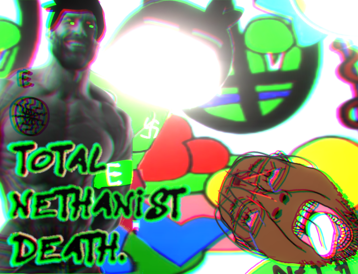
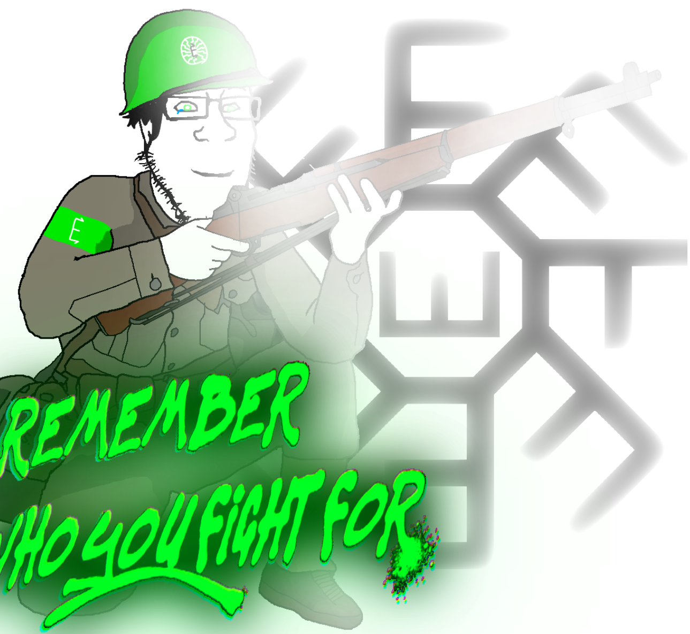
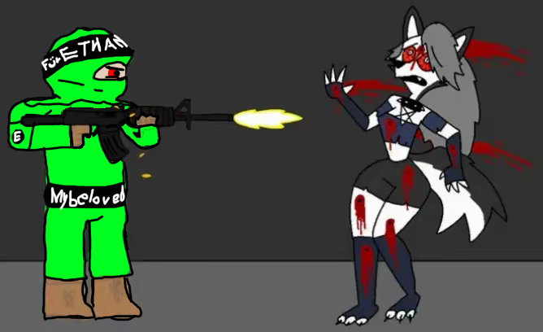
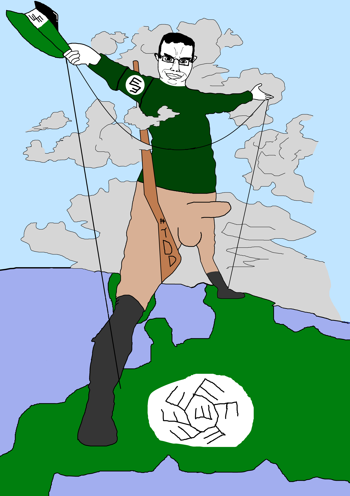
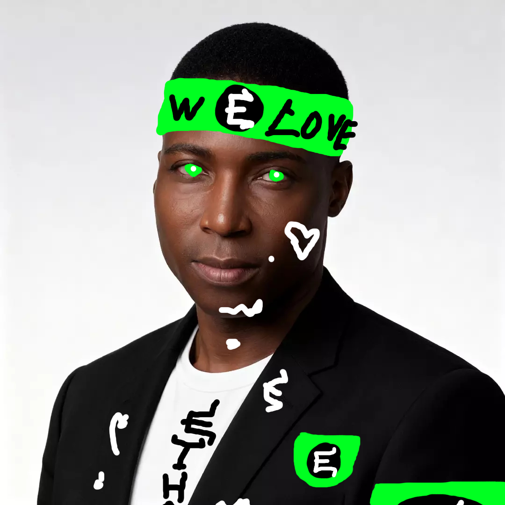
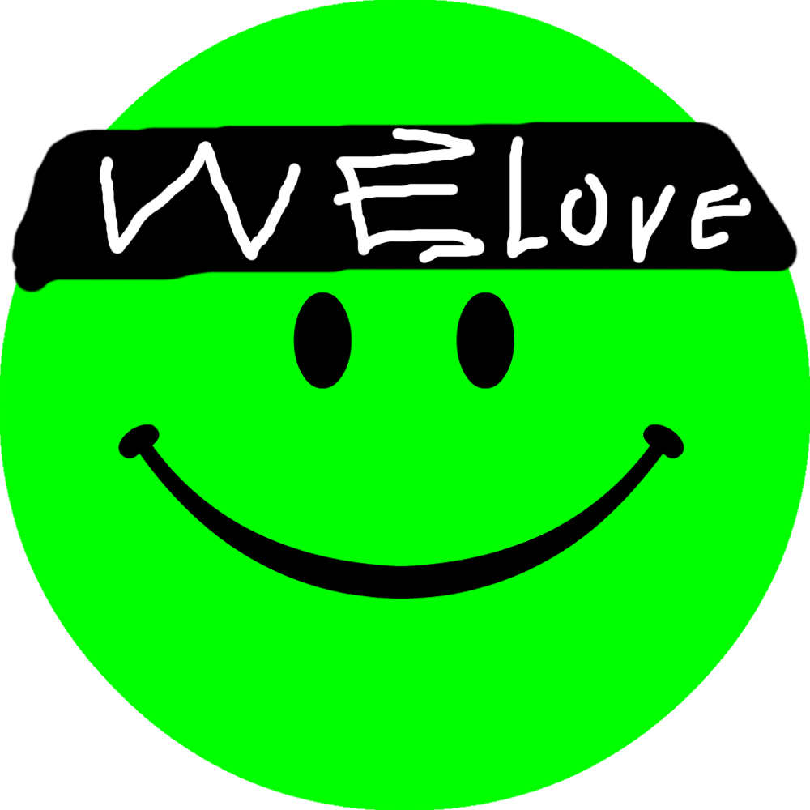
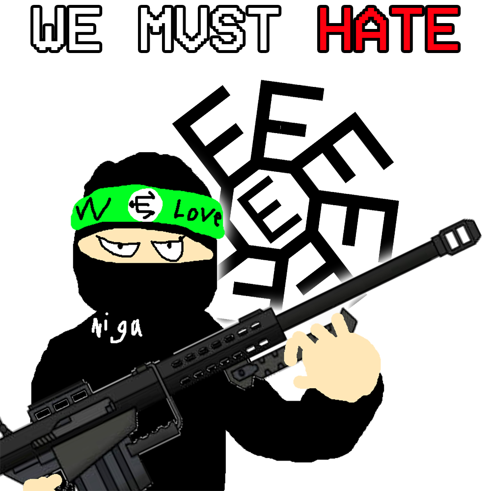
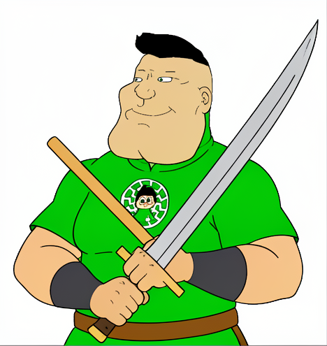

Ethanism
Ethanism is a movement associated with Ethan and the Clvbhouse community. Its identity is represented through various flags, emblems, artwork, and community-made media.
Overview
Ethanism is documented within the Clvbhouse Wiki as a movement connected to Ethan and several figures in the community. Its associated material includes political-style imagery, symbols, flags, emblems, and fan-made propaganda.
The movement's visual identity has appeared in multiple versions. These include the primary flag and emblem shown above, alternative flag designs, and an earlier emblem.
Symbols
Ethanism has several visual symbols documented on this wiki. The main flag and emblem are displayed together in the infobox, alongside alternative flag designs and an early emblem.
- Primary flag: View the primary flag
- Primary emblem: View the primary emblem
- Alternative flag I: View the alternative flag
- Alternative flag II: View the other alternative flag
- Early emblem: View the early emblem


Associated people
- Ethan — the figure with whom Ethanism is associated.
- Camemac — identified as the founder of Ethanism.
- Saar Sparky — a figure associated with Ethanism.
- ARB — another figure associated with the movement.
Gallery
This gallery contains Ethanism-related artwork, images, and videos, divided into two categories.
TVFFest Ethanist propaganda





Goated Ethanists



